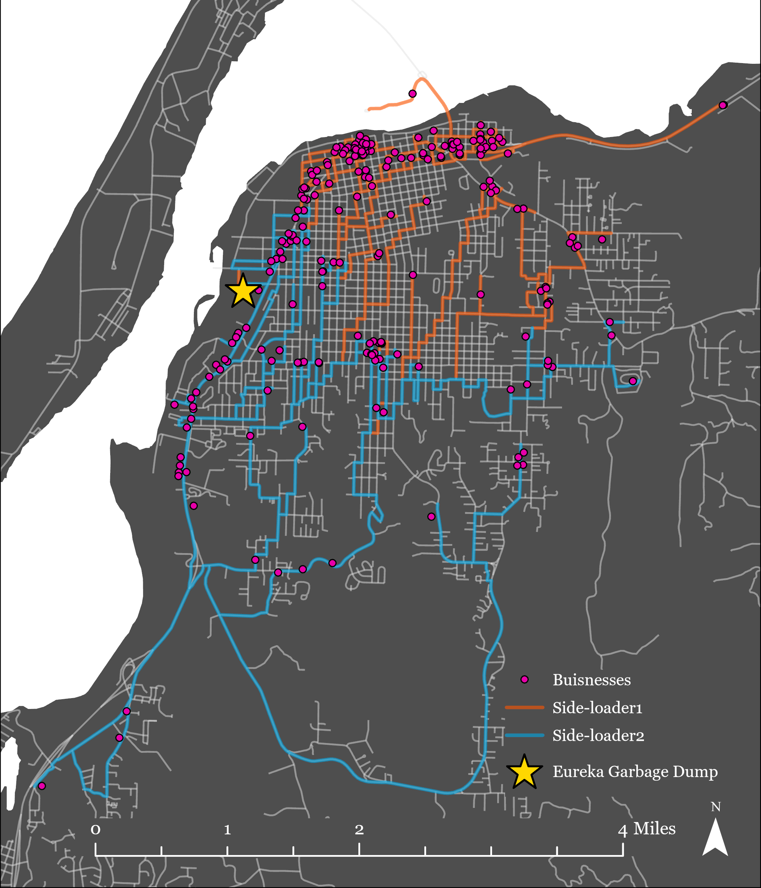

Humboldt Organic Waste Diversion Pilot Analysis
Adam Day | November, 2024
INTRODUCTION
The purpose of this report is to assist the Humboldt Waste Management Authority in their efforts to reduce their waste stream generated by compostable organic waste within Humboldt County. This report uses ArcGIS Pro to build a Vehicle Routing Model (VRM) to optimize routes for collecting organic waste from local businesses in Humboldt County. By analyzing various parameters of this model, this report aims to reduce overall costs and environmental impact associated with organic waste collection.
The secondary goal of this paper was to allow users to better understand how GIS can be used to determine least-cost paths for a developed network. GIS is the ideal medium for this analysis as the GPS data collection technology evolves “The ease of use and the low burden on the participants make this a viable tool for data collection spanning over several days or weeks” (Isaacson et al. 2016, 25-36). Using GIS and GPS data as the foundation of this study, this analysis was made possible by evaluating several criteria including the following:
By evaluating each of these criteria within the framework of this model, this project allows users to learn how to acquire data from public sources, geocode addresses, import XY data using different spatial reference systems, as well as defining projections of various map layers. Along with this, users are able create a network dataset, model vehicle routes based on the most cost-effective paths, adjust the model by changing various parameters based on set of path constraints, and ultimately evaluate the results from the model based on time and cost.
METHODS
ArcGIS Pro was the GIS used for this analysis. A standard workspace was created with several folders and subfolders allowing for sorting of different files based on their needs. Original data and files were kept separate from working data and files, for example. As with many models, the preliminary stages of this project included data collection from publicly provided county GIS website. The Humboldt County GIS Data Download page provided the source for this analysis by providing road county boundary shapefile data. Each layer imported into the ArcGIS Pro was then projected into the NAD 83 UTM Zone 10N spatial reference system. This reference system was used as it geographically reflects the area of study with the City of Eureka was the focus point for this analysis. Therefore, the county boundary shapefile was adjusted to reflect only the City of Eureka. The roads within the City of Eureka were also separated to their own shapefile by first creating a 1-mile buffer around all roads within the City of Eureka. As some roads extend slightly outside of the city, this was done to ensure all pertinent road segments needed were captured for this analysis. Once the roads were buffered, they were clipped to remove all areas of road outside the City of Eureka’s boundaries. After clipping the roads layer, the length of each new road segment was recalculated to reflect the new segments with meters as the unit of measurement. A time cost attribute was then added to the roads layer which calculated for the time of travel in minutes for each road segment. This was completed by using the Field Calculator tool with the following formula:
!Length!/(!AB_SPEED!*(1609.34/60))
Where ‘!Length!’ refers to the calculated road segment length, ‘!AB_SPEED!’ refers to the speed limit for this section of road. The results from this calculation provided the time of travel in minutes for each road segment.
The next step in the analysis involved incorporating city provided GPS data for each of the participating businesses. The businesses.csv file contains 246 businesses who will participate in this pilot program with each entry including a name, starting and ending times, service times, pickup quantities, and latitude/longitude coordinates. ArcGIS Pro allowed for the exportation of this data into the GIS as a shapefile. It is important to note that the original datum source references coordinate in the WGS 1984 datum, requiring us to convert the output coordinate system for this GPS data into the NAD 83 UTM Zone 10N system to maintain consistency across layers. Following this approach, the Eureka Garbage Dump, which serves as the depot location for this program, was geocoaded from Google Maps using 1059 W Hawthorne St, Eureka, CA 95501 as the address. This method provided lat/long coordinates similar to the city provided GPS data and was imported in ArcGIS Pro using a created .csv file similar to the previous mentioned methods.
After the GPS data for the businesses and garbage dump were added, a Network Dataset (ND) was created. A feature dataset containing the roads in the City of Eureka was created in within the Geodatabase and titled Eka_roads. Next, the previously clipped roads layer served as the feature dataset with a new dataset titled roads_ND being created.
With the data created and the ND established, a Vehicle Routing Problem (VRP) was created in ArcGIS Pro using the Network Analysis function. First, the orders (businesses) were loaded into the VRP. Next, the Eureka Garbage Dump station was loaded into the VRP under the depot section. Similar to the orders, a start and end time of 5:00:00 AM and 7:00:00 PM was used for the garbage dump. Finally, breaks were then imported into the VRP with similar start and end times as the depot. This method informs the trucks where to dump the garbage once their maximum capacities are reached.
Routes were created using two different truck types both with varying degrees of parameters. The first truck used in this analysis was a side loading truck, operated by one employee. The table below establishes the parameters set for this specific truck when used in the VRP:
Side-Loader Truck 01 Parameters
| StartDepotName | Eureka Garbage Dump |
| EndDepotName | Eureka Garbage Dump |
| StartDepotServiceTime | 15 |
| EndDepotServiceTime | 30 |
| EarliestStartTime | 5:00 AM |
| LatestStartTime | 6:00 AM |
| Capacities | 20000 |
| CostPerUnitTime | 0.75 |
| CostPerUnitDistance | 3.95 |
| OvertimeStartTime | 540 |
| CostPerUnitOvertime | 1.13 |
| MaxOrderCount | 300 |
| MaxTotalTime | 720 |
Rear-Loader Truck 01 Parameters
| StartDepotName | Eureka Garbage Dump |
| EndDepotName | Eureka Garbage Dump |
| StartDepotServiceTime | 15 |
| EndDepotServiceTime | 30 |
| EarliestStartTime | 5:00 AM |
| LatestStartTime | 6:00 AM |
| Capacities | 38400 |
| CostPerUnitTime | 1.5 |
| CostPerUnitDistance | 2.75 |
| OvertimeStartTime | 540 |
| CostPerUnitOvertime | 2.25 |
| MaxOrderCount | 300 |
| MaxTotalTime | 720 |
Both trucks were used in various degrees of the VRP model with the most cost-effective one being determined by running the model multiple times with varying combinations of the two trucks. Results from the different combinations can be viewed below in the following tables.
RESULTS
Several variations of the VRP were ran to determine the most cost-effective route and truck type for this pilot program. It is important to remember that a total of 246 orders are being expected and must be completed without the truck(s) exceeding 720 minutes of operation time. The tables below each reflect the outcomes of the various VRP models ran for this analysis. A further discussion on the outcomes of these models can be found in the discussion section of this paper.
The first model uses one side loading truck and is operated by one single employee. All orders were not reached in this setup, with 20 orders being unfulfilled.
The following table represents the outcomes of the first model ran in the VRP:
VRM Model Outcome 1
| VRM Model 01 | Results |
|---|---|
| Description | Side-loading truck with one driver |
| Total cost in dollars | $1,103.95 |
| Total time in minutes | 720 |
| Total unreached orders | 20 |
The second model uses two side loading trucks and are both operated by one single employee each. All orders were reached using this setup.
The following table represents the outcomes of the second model ran in the VRP:
VRM Model Outcome 2
| VRM Model 02 | Results |
|---|---|
| Description | Two side-loading trucks with one driver each |
| Side-Loader 01 time in minutes | 465 |
| Side-Loader 01 cost in dollars | $673.66 |
| Side-Loader 02 time in minutes | 399 |
| Side-Loader 02 cost in dollars | $577.05 |
| Total time in minutes | 864 |
| Total cost in dollars | $1,250.71 |
| Total unreached orders | All orders were reached |
The third model uses two rear loading trucks, both of which are operated by two employees each. All orders were reached using this setup.
The following table represents the outcomes of the third model ran in the VRP:
VRP Model Outcome 3
| VRM Model 03 | Results |
|---|---|
| Description | Two rear-loading trucks with two drivers each |
| Rear-Loader 01 time in minutes | 448 |
| Rear-Loader 01 cost in dollars | $719.14 |
| Rear-Loader 02 time in minutes | 416 |
| Rear-Loader 02 cost in dollars | $691.97 |
| Total time in minutes | 864 |
| Total cost in dollars | $1,411.11 |
| Total unreached orders | All orders were reached |
The fourth model uses three rear-loading trucks each operated by two employees. All orders were reached using this setup.
The following table represents the outcomes of the fourth model ran in the VRP:
VRP Model Outcome 4
| VRM Model 04 | Results |
|---|---|
| Description | Three rear-loading trucks with two drivers each |
| Rear-Loader 01 time in minutes | 391 |
| Rear-Loader 01 cost in dollars | $625.72 |
| Rear-Loader 02 time in minutes | 78 |
| Rear-Loader 02 cost in dollars | $144.04 |
| Rear-Loader 03 time in minutes | 395 |
| Rear-Loader 03 cost in dollars | $658.51 |
| Total time in minutes | 864 |
| Total cost in dollars | $1,428.27 |
| Total unreached orders | All orders were reached |
The fifth model uses one rear-loading truck and one single loading truck, each operated by the number of employees as described in the previous models. All orders were reached in this setup.
The following table represents the outcomes of the fifth model ran in the VRP:
VRP Model Outcome 5
| VRM Model 05 | Results |
|---|---|
| Description | One rear-loading trucks with one side-loading truck |
| Rear-Loader 01 time in minutes | 454 |
| Rear-Loader 01 cost in dollars | $903.08 |
| Side-Loader 01 time in minutes | 410 |
| Side-Loader 01 cost in dollars | $586.30 |
| Total time in minutes | 864 |
| Total cost in dollars | $1,489.38 |
| Total unreached orders | All orders were reached |
VRM Model 02 was found to be the most cost-effective method for the program in its current state. Figure 1 below visually represents the VRM Model 02 path within the City of Eureka.
Figure 1: Most Optimal Routing Path: Vehicle Routing Model 02
As shown above, each business is incorporated into a route with minimal overlap between the two routes. The Eureka Garbage Dump remains central to this route setup and will likely alter future routes should it need re-location, or an additional space added.
DISCUSSION
The various VRP models reflect different outcomes of the program’s logistical situation. In the first model, it found that using one side-loading truck with only one driver cost a total of $1103.95 and used the entire 720-minute time allotment to collect only 226 orders. 20 orders were not reached primarily due to capacity of the truck. This outcome is not ideal for this program as all orders must be reached during the operation period. The second model found that using two side-loading truck each operated by one driver costed a total of $1250.71 to complete and fulfilled each order within the 720-minute time period with both trucks having time to spare. This outcome is more ideal that VRM Model 01 as the increased cost amounts to $146.76 while fulfilling all 246 orders within the allotted time with time to spare. The third model found that using two rear-loading trucks both operated by two employees costed a total of $1411.11 to complete and does so in a total combined time of 864 minutes. All 246 orders were reached in this setup with time to spare for each truck. While this model achieves the requirements for this program, it represents a $160.40 cost increase to the program while performing the same functions as VRM Model 02. The fourth model found that using three rear-loading trucks each with two employees, this model also achieves the program’s goals in the allotted time period but represents a cost increase of $177.56 from VRM Model 02. As cost efficiency is at the core of this analysis, this model will not suffice when compared to VRM Model 02. The fifth and last model found that by using one side-loading truck and one rear loading truck it was the most expensive configuration yet with a total cost difference of $238.67 between VRM Model 05 and VRM Model 02. Again, while this setup does achieve the programs goals of all 246 orders in the 720-minute time period, it does not meet program’s goal of being the most cost-effective method.
The table below reflects the outcome for each of the VRP models with a focus on the main factors based on the program’s needs:
VRM Models 1-5 Results
| VRM Model 01 | Setup | Total Cost | Total Time | All Orders Reached? |
|---|---|---|---|---|
| VRM Model 01 | Side-loader x1 | $1103.95 | 720 | No |
| VRM Model 02 | Side-loader x2 | $1250.71 | 846 | Yes |
| VRM Model 03 | Rear-loader x2 | $1411.11 | 846 | Yes |
| VRM Model 04 | Rear-loader x3 | $1428.27 | 846 | Yes |
| VRM Model 05 | Side-loader x1 & Rear-loader x1 | $1489.38 | 846 | Yes |
As we can see, while the VRM Models 02-05 all achieve the program’s goal of 246 orders fulfilled, VRM Model 02 remains the most cost-effective approach for this program. While it seems that increasing the truck volume (i.e., 1 truck to 2 trucks) does have an impact on the route efficiency, there are diminishing returns when incorporating more than 2 trucks and rear-loading trucks with two employees. This is likely due to a combination of increased costs of maintaining an additional employee per truck with the rear-loading trucks, as well as the side-loading trucks having a more optimal setup for pickup and transporting.
As designed, this model provides a flexible foundation which can be refined and scaled as the program’s needs evolve. With the potential of new data and/or additional businesses, the model should ideally be revisited on a semi-annual or quarterly basis. Regular updates will help account for changes in waste volume, business participation, or collection requirements, ensuring the system maintains maximum efficiency and cost effectiveness.
Future adaptations may include increasing the number of trucks or changing vehicle configurations based on route demands. For instance, as more businesses join the program, introducing a third vehicle or switching from a side-loader to a rear-loader truck may enhance capacity and reduce route times, particularly for high-density areas, negating the diminishing returns found in its current setup. These configurations allow for a responsive approach to scaling, which is vital for programs with dynamic needs like waste management.
At 246 orders with the current configuration, the model shows a solution with two side-loader trucks and a single employee for coverage. This model allows flexibility in vehicle type and route structure and adheres to best practices for routing and logistics, providing a pathway toward continually optimize organic waste collection as the program grows.
REFERENCES
Isaacson, Michal, Noam Shoval, Hans-Werner Wahl, Frank Oswald, and Gail Auslander. “Compliance and Data Quality in GPS-Based Studies.” Transportation (Dordrecht) 43, no. 1 (2016): 25–36. https://doi.org/10.1007/s11116-014-9560-3.